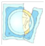

Things to remember
- Exclusive breastfeeding during the first 6 months protects mother from getting pregnant as long as periods have not returned. Consult family planning counsellor as soon as possible after giving birth
- When baby is 6 months old continue breastfeeding and being giving other foods
- Watch for signs of diarrhoea, fever, difficulty breathing, or refusal to feed because these need prompt attention

- If mother is HIV-infected, she should not feed her baby from a nipple that is cracked or bleeding. Instead, she should feed from the other breast and express and discard milk from the breasted that is affected
- Getting infected or re-infected with HIV while breastfeding increases the risk of mother to child transmission. Important to practice safe sex by using condoms consistently and correctly
- To protect the baby, the mother must know her HIV status
Previous
Next